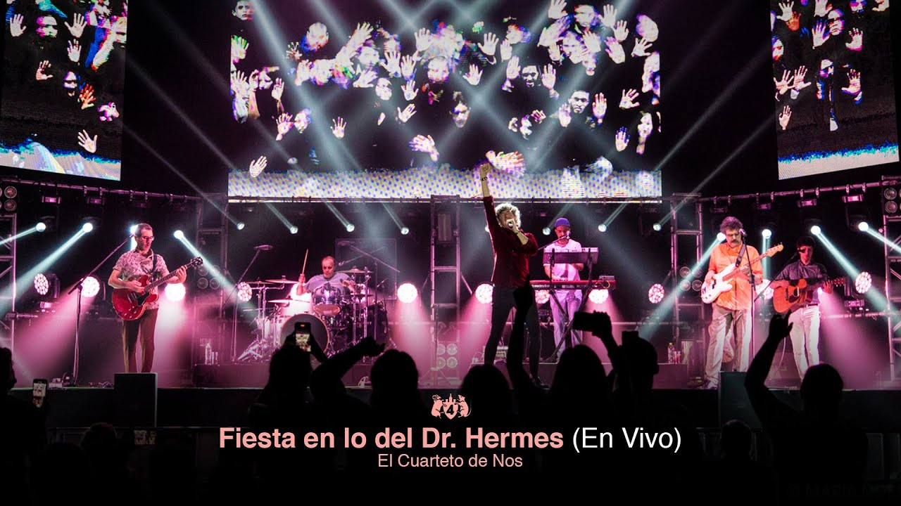

Instagram!
Instagram!
 Facebook!
Facebook!
 Twitter!
Twitter!
Video para descubrir más del cuarteto
by Alvinsch
Giras y conciertos del cuarteto
Cuarteto de Nos ha realizado numerosas giras y conciertos a lo largo de su extensa trayectoria, consolidándose como una de las bandas uruguayas más reconocidas internacionalmente. Sus giras han abarcado países de América Latina, como Argentina, México, Colombia, Chile, Perú y Paraguay, así como también escenarios en España y Estados Unidos. Tras el éxito del álbum "Raro" en 2006, la banda comenzó a participar en festivales de renombre como Vive Latino en México y el Cosquín Rock en Argentina, lo que impulsó su popularidad más allá de Uruguay. Su gira promocional de "Porfiado"(2012) fue una de las más extensas, incluyendo presentaciones en importantes venues de Buenos Aires y Ciudad de México, donde agotaron entradas en varias ocasiones. En 2017, con el lanzamiento de "Apocalipsis Zombi", realizaron una ambiciosa gira por más de 10 países, consolidando su presencia en el circuito de festivales internacionales. Además, el Cuarteto ha ofrecido conciertos en teatros emblemáticos como el Teatro Gran Rex en Buenos Aires y el Auditorio Nacional en Ciudad de México, donde han celebrado sus discos y conectado con un público cada vez más global.
